Welch Two Sample t-test
data: body_mass_g by species
t = -20.628, df = 170.4, p-value < 2.2e-16
alternative hypothesis: true difference in means between group Chinstrap and group Gentoo is not equal to 0
95 percent confidence interval:
-1471.440 -1214.416
sample estimates:
mean in group Chinstrap mean in group Gentoo
3733.088 5076.016 Environmental Data Analysis and Visualization
Hypothesis Testing and Documenting for Future Users (and Future You)
Before class starts
Open RStudio and start a new R project for Week 5 Lecture
Open the Week 5 module take a look at the Data Sources document
Visualization critique
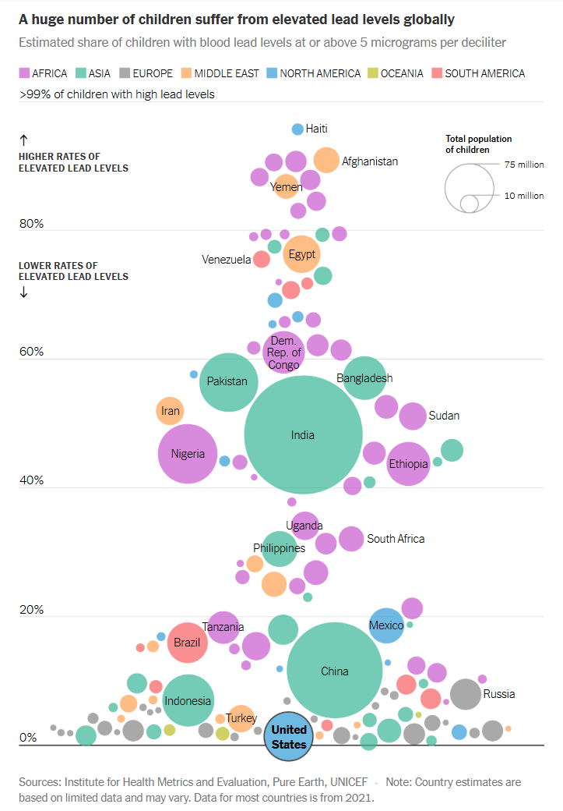Visualization critique
Visualization critique
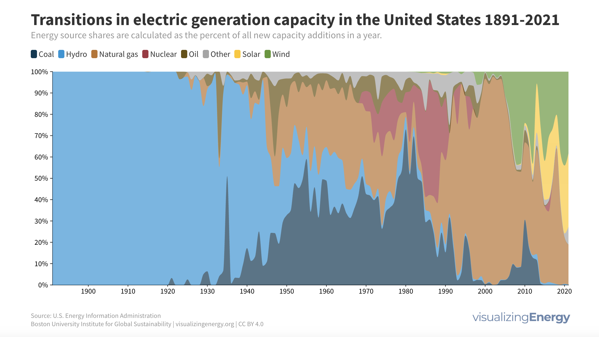Next week’s critiques
Emilia
Ruby
Eli
Dataset of the day
State-level energy profiles
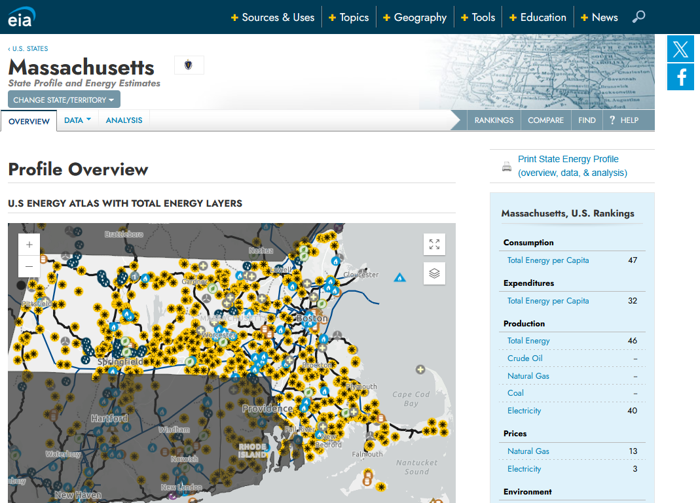Is this a meaningful pattern?
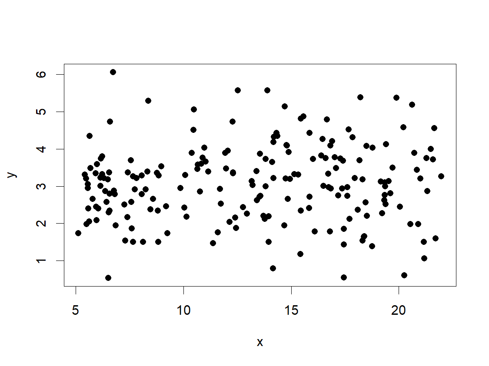Is this a meaningful pattern?
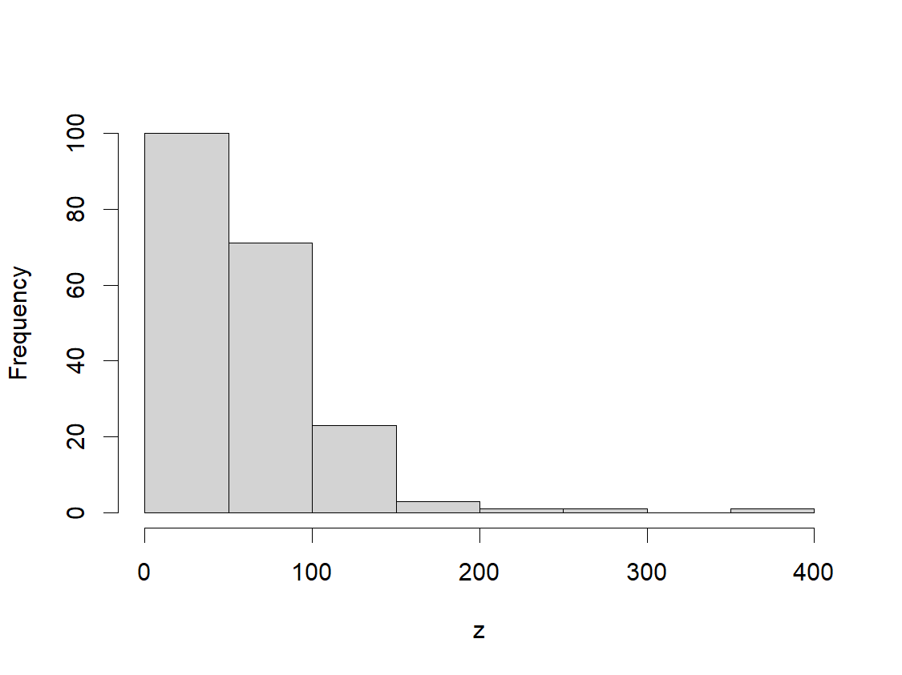Hypothesis testing
Hypothesis testing is a method of assessing the likelihood that a given proposition about the world is true.
Hypothesis testing
Stating the hypothesis
Collecting the data
Conducting a test
Interpreting the p-value
Hypothesis testing
Stating the hypothesis
Collecting the data
Conducting a test
Interpreting the p-value
“Rural counties in Massachusetts will have the same levels of PFAS contamination in drinking water as urban counties.”
Hypothesis testing
Stating the hypothesis
Collecting the data
Conducting a test
Interpreting the p-value
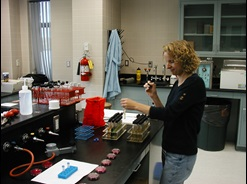
Hypothesis testing
Stating the hypothesis
Collecting the data
Conducting a test
Interpreting the p-value
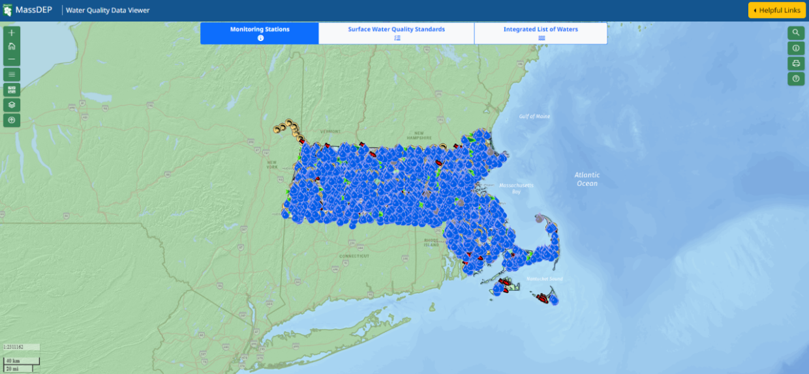
Hypothesis testing
Stating the hypothesis
Collecting the data
Conducting a test
Interpreting the p-value
t.test(data=waterQuality, PFAS~urbanRural)
Hypothesis testing
Stating the hypothesis
Collecting the data
Conducting a test
Interpreting the p-value
We used Welch’s two-sample t-test to assess difference in mean PFAS levels between rural and urban counties, obtaining a p-value of 0.326. We can retain the null hypothesis that there is no difference in means between these groups.
Interpreting p-values

simplypsychology.org
Null hypotheses
In a hypothesis test, the p-value is the probability that the pattern in the data could arise in a situation where the null hypothesis is true.
Usually, the null hypothesis relates to our ability to distinguish the data’s patterning from that which would arise by chance.
Is “null” somehow negative?
Depending on the test, the null hypothesis may be framed in terms that can sound like they have positive or negative connotations, even though they pass no judgement on the value of the outcome.
Reviewing null hypotheses
For the Shapiro-Wilk Normality test, the null hypothesis is the data are drawn from a population that is normally distributed
Therefore, when p<0.05, the data are unlikely to have been drawn from a normal distribution
Reviewing null hypotheses
For the Spearman’s rank correlation test, the null hypothesis is that there is no monotonic relationship between the variables
Therefore, when p<0.05, this means the pattern in the data are inconsistent with having no relationship (e.g., having arisen from chance)
Alternative hypotheses
An alternative hypothesis is often the opposite of the null…
“Low income neighborhoods have different PM2.5 concentrations than high income neighborhoods.”
Alternative hypotheses
…but it can indicate direction if it is specified in the test.
“Low income neighborhoods have higher PM2.5 concentrations than high income neighborhoods.”
Reporting the results of a statistical test
When reporting the results of a statistical test, be sure to include the following information at a minimum within the context of the hypothesis:
Name of test and variable(s)
Test statistic(s) (letter will vary)
Degrees of freedom (df)
p-value (p)
Reporting the results of a statistical test
Reporting the results of a statistical test
“I used Welch’s two-sample t-test of the body masses for Gentoo and Chinstrap penguins, and rejected the null hypothesis that there is no difference in mean body mass between these two groups (t=-20.62, df=170.4, p<2.2e-16).”
Quarto
Quarto is a data science documentation and publishing system that comes built-in to RStudio.

http://quarto.org
Reproducibility in data science

The Turing Way project illustration by Scriberia. Used under a CC-BY 4.0 licence. DOI: https://doi.org/10.5281/ZENODO.3332807
Isn’t code reproducible by default?
Code will do precisely what we want, but it will not necessarily understood by others.
Isn’t code reproducible by default?
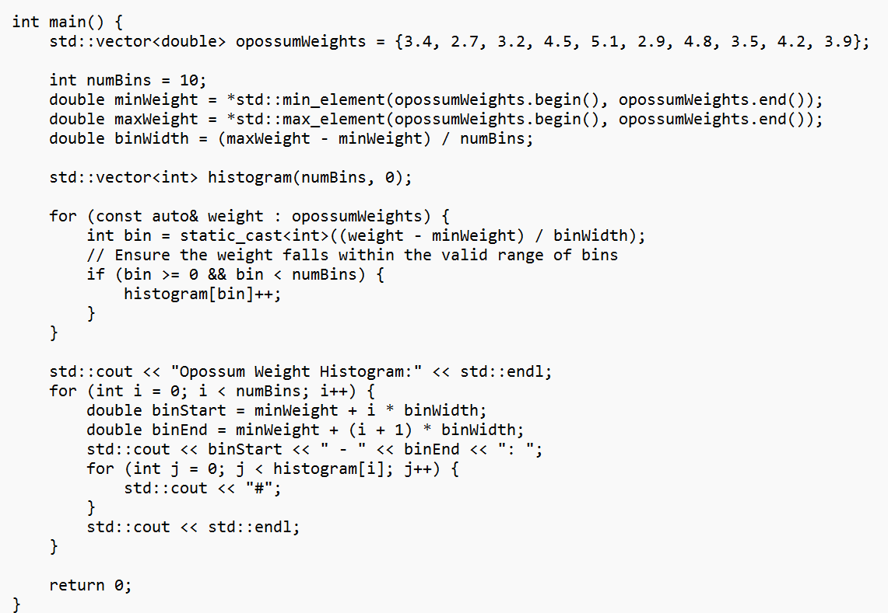Literate programming
An approach to writing software that centers the human user (and re-user) by combining natural language explanations with code.
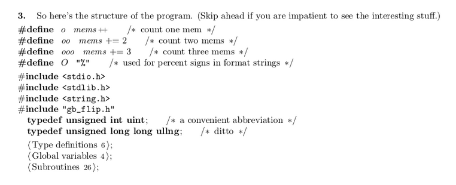https://akkartik.name/post/literate-programming
Code notebooks
A code notebook is software tool for literate programming.

Communicating beyond the notebook
Working on a workflow
Code notebooks provide a convenient way to document and organize a data science project from beginning to end; in otherwords, they can form the basis of a workflow.
Working on a workflow
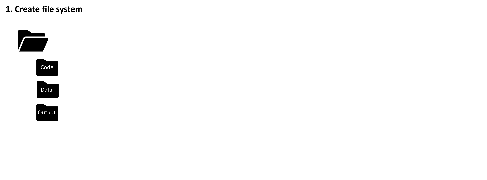Working on a workflow
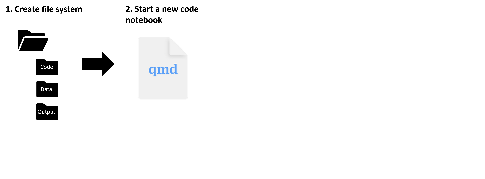Working on a workflow
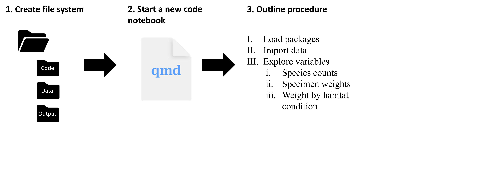Working on a workflow
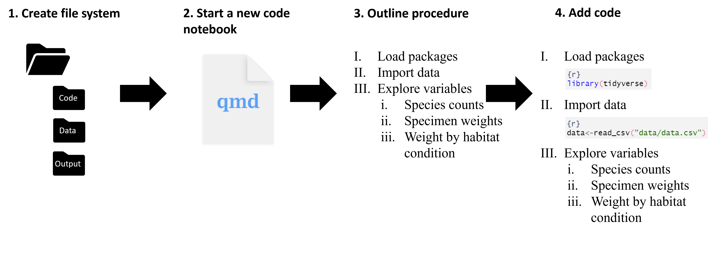What about files?
When we write code that reads from files, these need to be in places where the Quarto document can find them.
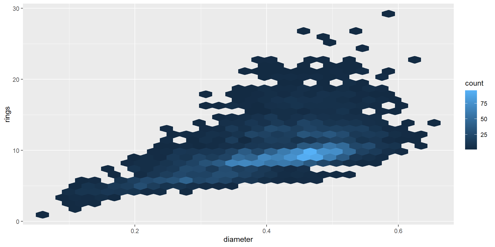Sharing your file system
The zip function provides a convenient way to turn your entire working directory into a .zip file
Activity: Brainstorming with Quarto
Put the Quarto workflow to work in brainstorming ideas for your final project/presentation!
Create a file system for your final project
Start a new Quarto document and save it to your working directory
Use headers to outline a data analysis process from a project/presentation you’d like to do.
Begin filling out the sections with some preliminary ideas about what kinds of data you’d use
Use links to promising datasets in the text
Use code chunks with comments to draft code